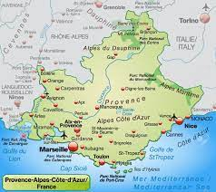

Culture française
Géographie 🌐
Région française: Provence –Alpes - Côte d’Azur

Le Midi c’est ainsi qu’on a baptisé le sud-est de la France. Il bénéficie d’un climat
méditerranéen
: les étés sont chauds et secs, le ciel est bleu, les hivers sont doux. Un vent violent, le
mistral,
balaie parfois la région.
Le Midi, c’est le pays des oliviers, des mimosas, de la lavande, le paradis du tourisme,
constituée
de plages de sable et de criques et de villes prestigieuses comme Cannes, Marseille, Toulon et
Nice.
Cannes est le rayonnement international avec le festival du film dans cette région, c’est à dire
le
festival de Canne, où les acteurs reçoivent la Palme d’Or pour des rôles dans des films
Une activité traditionnelle est la fabrication des parfums.
Un lieu touristique est la Cathédrale Notre Dame de la Garde de Marseille, qui est considerée la
protectrice des pêcheurs et des marins.
La cuisine à l’huile d’olive, l’ail, les herbes de Provence enrichissent la spécialité
gastronomique
la bouillabaisse de Marseille et la salade niçoise.
Une personnalité né dans cette région c’est le fotbaleur Zinedine Zidane, qui a reçu le ballon
d’or
en 1998.
La langue régionale est généralement appelée
provençal et on en distingue plusieurs variétés ou dialectes : maritime, niçard, vivaro-alpin.
De nombreuses œuvres littéraires évoquent la
région. « Les Souvenirs d’enfance » de Marcel Pagnol
se déroulent principalement à Marseille et dans les
collines environnantes. Les «Lettres de mon moulin»
d’Alphonse Daudet reprennent pafois des récits tirés
du folklore provençal.
J’apprecie cette région, car elle est la plus riche région de la France en éveniments, sites et
peysages naturels.
Région française d'outre-mer - Martinique

La Martinique fait partie de l’archipel des Petites Antilles situées dans
l'océan Atlantique. Capitale - Fort de
France. Sa superficie est de 1100 km²
et une population d'environ 328 500 h
(densité - 299 h / km²). Avec une agriculture faiblement développée, la Martinique ne peut
satisfaire ses propres
besoins. La culture de la canne, autrefois très développée, est en recul. Malgré le
développement des cultures maraîchères, de
l'ananas et de la banane, l'agriculture est en
difficulté. La plupart des produits alimentaires consommés viennent
de la métropole. Le sucre, la mélasse avec le rhum forment la plus
grosse part des exportations, tandis que le café, le cacao, la vanille
n'occupent qu'une place très modeste parmi les cultures commerciales, derrière la banane qui est
en deuxième position.
Les cultures vivrières (maïs, ignames, manioc, patates) sont
insuffisantes. L'élevage, par contre, satisfait plus de 75% des besoins
locaux en viande et en lait. La canne à sucre couvre plus de 50 %
des terres cultivables, la plus grande partie desquelles sont exploitées sous forme de grosses
propriétés capitalistes appartenant à une
minorité infime de la population, tandis que les fermiers, les petits
planteurs et un nombre important d'ouvriers agricoles vivent dans
des conditions presque misérables.
Parmi les ressources principales
on cite: le rhum, les bananes, les ananas, le pétrole raffiné, le ciment
et le tourisme.
La Guyane

La Guyane, une très vieille colonie (où autrefois il y avait un fameux
bagne), a été déclarée D.O.M. par la
loi № 82-1171 du 31 décembre 1982.
Elle est située au Nord-Est de l’Amérique du Sud. Avec une superficie de
91 000 km² et une population de
73 000 hommes (densité moins d’un
homme sur un km²) la Guyane est le
plus grand D.O.M. de la France.
Le climat équatorial favorise le
développement d’une luxuriante forêt qui couvre 82 % du sol. La
population, composée de blancs, de noirs, d’indiens et de réfugiés du
Sud-Est asiatique (la majorité ce sont des descendants d’esclaves qui
avaient fui leurs maîtres), est concentrée dans une étroitement vide d’hommes. La forêt règne
sur tout le département et les
cours d’eau sont les seules voies de pénétration à l’intérieur. Avec
une agriculture qui ne couvre pas ses besoins et une forêt mal exploitée elle vit suspendue au
succès ou à l’insuccès du programme
Ariane-espace qui conditionne le maintien de la base de Kourou.
Aujourd’hui l’attention de la Métropole est attirée par les
possibilités d’exploiter les richesses minières, la beauxite, les forêts,
les crevettes du littoral. On veut y introduire des plantations d’avocatiers, de
pamplemoussiers, de citronniers.
Le Centre d’Etudes Spatiales, à Kourou, semble avoir un
brillant avenir. Des tirs de fusées sont possibles vers l’Est sans risque grave en cas de
retombée. La proximité de l’Equateur permet de
placer plus facilement des satellites sur l’orbite géostationnaire très
recherchée pour les télécommunications. Les succès de la fusée européenne «Ariane» annoncent une
activité soutenue pour les décennies prochaines.
Les T.O.M. sont au nombre de six. Les statuts actuels de la
majorité des T.O.M. ont été adoptés par les lois du 29 juillet 1961,
du 28 décembre 1976 et du 12 juillet 1977.
Le Canada - pays francophone

Le Canada, le plus grand pays d’Amérique du Nord et le deuxième plus grand pays du monde, ne compte « que » 35 millions d’habitants. Cela en fait un pays très peu peuplé, mais prospère. Le Canada est également une destination de voyage populaire, tant pour les voyageurs d’affaires que pour les touristes.Il y a des similarités entre les jours de fêtes du Canada et de la France, en raison du grand groupe d’habitants chrétiens, mais la France en fête plus. Tout comme les États-Unis, le Canada a aussi Thanksgiving, qui n’est pas célébré le même jour.Vous aimez les sports d’hiver ? Les montagnes canadiennes sont l’endroit où il faut être. De plus, les chutes du Niagara ne doivent pas être manquées lors d’un séjour au Canada ; ces chutes d’eau font environ cinquante mètres de haut et près de sept-cents mètres de long. La Tour CN à Toronto vaut également la peine d’être visitée pendant vos vacances au Canada. Cette tour de plus d’un demi-kilomètre de haut offre une vue spectaculaire sur la ville.
Provence–Alpes–Côte d’Azur - région française

Le Midi C’est ainsi qu’on a baptisé le sud-est de la France. Il bénéficie d’un climat
méditerranéen
: les étés sont chauds et secs, le ciel est toujours bleu, les hivers sont doux. Un vent
violent, le
mistral, balaie parfois la région. Le Midi, c’est le pays des oliviers, des figuiers, des
mimosas,
de la lavande…et de la pétanque ! Deux ensembles géographiques le composent : - La Provence - La
Côte d’Azur : c’est la Riviera, paradis du tourisme, constituée de plages de sable et de criques
et
de villes prestigieuses comme Cannes, Nice, Grasse, Antibes…
Les villes du Midi La région compte :
- Trois des villes les plus peuplées de France
(Marseille,
Toulon, Nice).
- Cannes et son rayonnement international avec le festival du film.
Son point fort : le tourisme - Agriculture : cultures maraîchères, cultures de fleurs et de
lavande,
vignobles.
Activité traditionnelle : les parfums (à Grasse).
- Transports ♦ Marseille est le premier port français. ♦ Le TGV méditerranée relie Paris Ã
Marseille
en 3 heures (1000 km).
♦ L’aéroport de Nice Côte d’Azur est le 2e aéroport français.
Le Corbusier est l’un des premiers architectes à construire dans le monde entier.Il a été Ã
la
fois
acclamé pour la qualité sculpturale de ses espaces de vie de forme libre et critiqué pour la
création de blocs de logements sociaux en béton après la Seconde guerre mondiale.
Le tourisme concerne le tourisme d’affaires, le tourisme culturel, le tourisme de loisirs et
sportif, le tourisme thermal. La mer et la montagne permettent de faire se succéder saisons
d’été et
saisons d’hiver. Les spécialités régionales : La cuisine à l’huile d’olive, l’ail, les herbes de
Provence ; L’aïoli (sauce à base d'ail et huile d'olive), la soupe au pistou, les olives, les
anchois, la tapenade (préparation à base de petit morceaux d'olives broyées). La bouillabaisse
de
Marseille (plat à base de poissons de roche, de sauces et de légumes), la salade niçoise, la
ratatouille niçoise, la panisse (galette de farine de pois chiche), Les melons de Cavaillon Les
fromages : fromages de chèvre Les vins : les rosés de Provence Apéritif : le pastis (boisson
alcoolisée à base d'épices et d'anis)
Marseille - ville de France
Marseille est, après Paris, la deuxième ville la plus peuplée de France. Ses habitants sont
appelés
les Marseillais, est la plus ancienne implantation urbaine de France. - Elle est également le
premier port de France. - Elle abrite l'un des clubs les plus titrés du football français,
l'Olympique de Marseille. La ville s'est développée autour de l'ancien port grec devenu « Le
Vieux-Port », notamment au cours de la deuxième moitié du XIXe siècle, période pendant laquelle
elle
a connu un développement important, stimulé par la croissance du commerce vers le nouvel empire
colonial français : l'Algérie, le Levant et l'Extrême Orient. Marseille cosmopolite - Marseille
a
toujours été le « carrefour du monde ».
Notre-Dame de la Garde, construite en 1870, culmine à 162 m d’altitude sur les hauteurs de
Marseille, au Sud du Vieux-Port. Au fil des années, elle est devenue, dans le cœur des
Marseillais,
la protectrice de la ville et porte le surnom de « Bonne Mère », en raison de la présence d'une
immense statue dorée de la Mère à l'Enfant de plusieurs mètres de haut. Elle est l'objet de
toutes
les demandes des citadins qui lui font des présents sous la forme de cierges, d'ex-voto, de
processions qui ont lieu de 15 août lors de l'Assomption, et même de maillots à La basilique
Notre-Dame de la Garde. l'effigie de l'Olympique de Marseille !
SOPRANO est un Rappeur français né à Marseille, apprecié surtout par les jeunes, qui fait
connu le français dans
le monde par ses chansons qui
traitent comme sujet les problèmes sociaux.
Eveniments historiques ⏳
La Révolution française
Le 14 juillet 1789, la population parisienne se soulève et prend la Bastille. Ce jour est devenu
celui de la fête nationale.
Avant 1789 le pouvoir politique appartient au roi seul. Avec la Révolution, la politique
devient, en
principe, la chose de tous: l’homme est un citoyen! En proclamant la souveraineté de la nation,
la
Révolution fait naître un courant libéral qui conduit, plus tard, au suffrage universel et à la
démocratie. Elle détruit la société de l’Ancien Régime: abolit les privilèges, offre à tous
l’admission à tous les emplois et l’égalité devant les impôts. Elle accentue la laïcisation de
l’Etat et enlève à la société son fondement religieux: l’Eglise perd le monopole de
l’enseignement.
La Révolution rénove l’enseignement secondaire par la création des grandes écoles (l’Ecole
Normale
Supérieure, l’Ecole Polytechnique etc.). La prise
de la
Bastille est considérée comme le début de la Révolution et la fin de la monarchie absolue:
Abolition
des privilèges des nobles.
- Déclaration des droits de l’homme et du citoyen, inspirée des
doctrines
des philosophes des Lumières.
- 1792 : l’Assemblée prononce la chute de la royauté et la
proclamation de la République. 1792-1799 : après des années de troubles politiques et de
guerres,
qui ont vu le roi Louis XVI condamné à mort et guillotiné, le général Bonaparte prend le pouvoir
par
un coup d’Etat en 1799.
S'informer plus
La Guerre de Cent Ans

Entre 1337 et 1453 c’est une longue guerre
entre les Anglais et les Français appelée dans l’histoire la Guerre de 100 ans. Au début du 15-e
siècle,
les Anglais ont occupé tout le nord de la France. En
1422, après la mort de Charles VI, les Français
voulaient couronner le jeune Charles VII Ã Reims
comme tous les autres rois de France: sans cette
cérémonie, il n’était pas vraiment le roi. Mais cela
n’était pas possible, parce que les Bourguignons,
alliés des Anglais, occupaient la ville.
Dans le petit village de Domrémy, en Lorraine,
une jeune paysanne de 17 ans, Jeanne d’Arc, a
entendu les voyageurs raconter que les Anglais
avaient occupé une grande partie de la France.
Depuis ce jour-là , elle pensait sans cesse à son
malheureux pays. Un jour, elle a entendu dans le
ciel des voix qui lui disaient: «Jeanne, il faut chasser les Anglais de France, tu dois aller
voir
le roi et
libérer le pays.»
En février 1429, Charles VII se trouvait au château de Chinon, en Touraine. Jeanne a obéi aux
voix et après un voyage long et diffi cile, elle est arrivée à Chinon. D’abord, le roi ne
voulait
pas lui
parler: il pensait qu’elle était folle. Enfi n, au bout de 3 jours, elle a réussi à entrer au
château. Le roi
et les nobles voulaient se moquer d’elle: un noble a mis les vêtements du roi. Mais Jeanne est
allée
directement vers Charles VII et lui a dit: «Au nom de Dieu, vous êtes le roi. Donnez-moi une
armée
et
je vais libérer la France». Le roi ne comprenait pas comment Jeanne a pu le reconnaître. Il
pensait
que c’était Dieu qui lui avait envoyé cette jeune paysanne et il lui a donné une armée.
Depuis plus de six mois, les Anglais faisaient le siège d’Orléans. En mai 1429, Jeanne d’Arc est
arrivée avec son armée. La bataille a été très dure. Mais l’exemple de la jeune fi lle a donné
du
courage aux soldats français et au bout de 3 jours, ils ont libéré la ville.
En juillet 1429, Jeanne est entrée dans Reims avec son armée. Le roi Charles VII a été couronné
dans
la grande cathédrale. Mais à la cour il y avait des gens qui n’aimaient pas Jeanne d’Arc. Les
militaires
étaient jaloux de ses succès et quelques nobles, amis des Bourguignons, disaient qu’elle était
sorcière.
En 1430, Jeanne d’Arc marchait vers Paris, mais à Compiègne, elle est tombée entre les mains des
Bourguignons, qui l’ont vendue aux Anglais. À Rouen, on lui a fait un procès, et elle a été
condamnée
comme sorcière. Le roi de France, n’a rien fait pour Jeanne, qui le 30 mai 1431, est montée sur
le
bûcher.
En 1920, la jeune Lorraine devient sainte Jeanne d’Arc. Elle est aujourd’hui un symbole de la
nation
française. Sa statue se trouve dans beaucoup de villes de France. À Orléans, chaque année, en
mai,
la ville donne une grande fête et on peut voir Jeanne d’Arc qui passe dans les rues sur son
cheval.
Les systèmes français 👩‍🎓
Les symboles de la République française
Le drapeau français
Bleu. Blanc. Rouge.
Ces couleurs, tu les vois pendant les matchs de foot, dans ta mairie ou ton école. Ce sont
les
couleurs du drapeau français. Sais-tu pourquoi ? Le blanc, c'était la couleur du roi. Le
bleu et
le rouge étaient les couleurs de la ville de Paris. Imaginée pendant la Révolution
française, en
1789, l'alliance des trois couleurs était donc le symbole de l'alliance du roi et du peuple
et
reste le symbole d'une France unie.
"Liberté, Égalité, Fraternité"
Ces trois mots sont la devise de la République française. Ensemble, ils représentent les
valeurs
qui nous unissent en tant que Français.
En tant que Français on pense que chacun d'entre nous naît libre et à égalité avec les
autres.
On pense aussi qu'on doit, pendant notre vie, faire preuve de fraternité, aider les autres.
Ces
valeurs font notre fierté et nous représentent partout dans le monde.
La Marseillaise de Rouget de Lisle
"Allons enfants de la patrie,
Le jour de gloire est arrivé !"
Si tu connais ces paroles c'est parce que c'est ainsi que commence notre hymne national : le
chant qu'on entonne pour représenter la France (dans des cérémonies ou des compétitions
sportives par exemple). Il a été composé pendant la Révolution française, quand les Français
se
déchiraient et alors qu'ils devaient s'unir pour faire face aux attaques de pays ennemis.
Aujourd'hui encore quand on le chante on dépasse ce qui nous divise et on se rappelle qu'on
est
tous Français.
Lire plus au sujet
Les institutions politiques de la République Française
Les institutions de la Ve République sont régies par la Constitution du 4 octobre 1958.
Cette
Constitution définit le rôle des institutions et leurs
relations. La France est une République - un État
dans lequel la communauté des citoyens exprime ses volontés directement ou par l’intermédiaire
de
délégués élus. La France est une
République indivisible, laïque, démocratique et
sociale.
Les traits dominants de la vie institutionnelle française sont: la séparation des pouvoirs
en exécutif, législatif et judiciaire. Le régime
de la Ve République est de type parlementaire,
puisque l’Assemblée Nationale peut renverser
le gouvernement, mais il est aussi présidentiel
car il donne un rôle très important au Président
de la République. Le pouvoir exécutif est partagé
entre le Président de la République et le Premier
ministre.
Le Président de la République est Emmanuel
MACRON, né le 21 decembrie 1977 à Amiens. Il a
été élu le 14 mai 2017 pour un mandat de 5 ans.
Il réside au Palais de l’Élysée.
âLe président de la République est le chef de l’Etat. Il est élu tous les 5 ans directement par
l’ensemble des Français. Il réside au palais de l’Elysée. Il veille au fonctionnement régulier
de l’Etat, au respect de l’indépendance nationale et des traités. Il nomme le Premier ministre,
préside le Conseil des ministres et peut dissoudre l’Assemblée nationale. Il est le chef des
armées, conduit la politique extérieure et, en cas de crise grave, peut disposer des pleins
pouvoirs.
âLe gouvernement – c’est-à -dire l’ensemble des ministres – avec à sa tête le Premier ministre
conduit la politique de la nation. Il a sous son autorité l’administration, la police et
l’armée. Il est responsable devant le Parlement. Il réside à l’hôtel Matignon.
â Le Parlement comprend deux assemblées, l’Assemblée nationale et le Sénat. 557 députés et 321
sénateurs discutent et votent les lois.
Le système éducatif français
Le système éducatif en France Tout d’abord, il est possible de mettre les enfants à la crèche quand ils n’ont que quelques mois. Mais la crèche ne fait pas partie du système éducatif français à proprement parler! En effet, le système éducatif en France commence réellement au primaire. 1. Enseignement Primaire Le primaire est divisé en deux parties: l’école maternelle et l’école élémentaire. Il regroupe les enfants de 3 ans à 10 ans à peu près. PRIMAIRE 2. Enseignement Secondaire Vers 10-11 ans, les enfants passent dans le secondaire et y restent jusqu’à 17-18 ans. À partir de là , ils vont avoir plusieurs professeurs, un différent pour chacune des matières enseignées. Le secondaire se divise en deux: le collège et le lycée. À la fin de la dernière année du collège, en 3e, les élèves passent ce qu’on appelle le Brevet des collèges. Il s’agit d’un petit examen général avec des connaissances basiques. Théoriquement, tous les Français doivent avoir ces connaissances, l’école étant obligatoire jusqu’à 16 ans en France. À la fin de la dernière année du lycée, en terminale, les élèves passent un examen très important: le Baccalauréat (= appelé aussi “bacâ€). 3. Enseignement Supérieur Enfin, le niveau le plus haut du système éducatif français s’appelle logiquement l’enseignement supérieur. Il existe également des systèmes publics et des systèmes privés. Tout d’abord, il y a l’université appelée également la “FACâ€. Les universités sont normalement publiques.
Fêtes et traditions 🎉
Le 14 juillet - Fête nationale
Le 14 juillet, c'est aujourd'hui dans l'esprit des Français le défilé
militaire le plus solennel, sur les Champs Elysées, en présence du chef de l'État. C'est aussi
une
fête populaire avec ses bals, ponctuée de feux d'artifice dans toutes les communes de France.
Mais
le 14 juillet, c'est surtout la fête républicaine, le symbole de la fin de la monarchie absolue,
de
la naissance de la Nation souveraine puis bientôt de celle de la République. La fête nationale
est
un moment où les citoyens peuvent ressentir leur appartenance à la nation républicaine parce que
cette fête trouve sa source dans l'histoire de la naissance de la République. Le 5 mai 1789, le
Roi
convoque les États généraux pour recueillir leurs doléances; mais l'assemblée du Tiers, qui
représente la bourgeoisie, se proclame Assemblée nationale constituante. Les députés font, le 20
juin 1789, le serment du Jeu de Paume de "ne jamais se séparer jusqu'à ce que la Constitution
fût
établie". Cette contestation des députés du Tiers trouve un écho dans l'opinion publique.
Le peuple
de Paris se soulève et décide de marcher sur la Bastille, prison d'État qui symbolise
l'absolutisme
de l'Ancien Régime. Le 14 juillet 1789, prend tout de suite une portée historique symbolique;
c'est
la preuve que le pouvoir du Roi n'est plus absolu et que ce pouvoir doit être limité par une
séparation des pouvoirs. Le 16 juillet, le Roi reconnaît la cocarde tricolore: la révolution est
faite. La prise de la Bastille symbolise pour tous les Français la liberté, la lutte contre
toutes
les formes d'oppression. Ce jour fut déclaré "Fête Nationale" le 31 janvier 1879.
La Fête de Toussaint - une fête réligieuse
La fête du 1-er novembre a une origine très lointaine puisqu’en fait elle
provient des Celtes. En effet, ceux-ci divisaient l'année en deux saisons, l'hiver et l'été. Le
premier novembre était une date très importante puisqu'ils fêtaient le début de l'année. C'était
donc une fête de passage; la fin de l'été marque le - 299 - tes: fêtes de la famille ou
manifestations familiales à l'occasion de la fête nationale du 14 juillet par exemple, avec une
forte contribution des enfants. Samain était aussi la fête des morts, ou plus exactement de la
communication entre les vivants et les morts. Ainsi cette nuit, les tombes sont ouvertes et le
monde
visible et invisible communiquent: les habitants de l'Autre monde peuvent faire irruption sur la
surface de la terre, et les humains peuvent s'engager dans le domaine des dieux, des héros et
des
défunts. Cette conception des relations entre morts et vivants a duré très longtemps. Ainsi,
dans
les pays anglo-saxons, la fête de la Toussaint est accompagnée de la célèbre manifestation
folklorique Halloween, où les morts, symbolisés par la fameuse citrouille évidée dans laquelle
on a
placé une chandelle, viennent taquiner les vivants.
A la fin du XIX-ieme siècle, le jour de
la
Toussaints et aussi le jour des Morts, les enfants se promenaient en balançant des betteraves
évidées ou des pots à fleurs remplis de braises allumées, sur lesquelles ils faisaient brûler
l'encens et ils demandaient aux passants: un cent (pièce de deux centimes) pour les pauvres
âmes.
Dans d’autres régions, le soir de la Toussaint, les enfants évidaient une betterave ou une
citrouille dans laquelle ils pratiquaient des entailles simulant les yeux, un nez, une bouche.
Une
chandelle éclairait à l'intérieur cette tête de mort que les enfants plaçaient au bord du chemin
en
sollicitant des passants quelque monnaie "pour les âmes". Il fallait aussi se garder de balayer
et
de laver les chambres et la cuisine parce que les âmes des trépassés reviennent sur terre dans
les
demeures qu'elles habitèrent. De même, il ne fallait pas frapper avec des bâtons sur les haies
et
les buissons, parce que les âmes sont dans les buissons. Pour l'Eglise catholique, la Toussaint
n'est autre chose que la fête de Tous les Saints, c'est-à -dire de la Communauté des vivants et
des
morts.
La Sainte Catherine

La Sainte Catherine se célèbre tous les ans le 25 novembre. Ce jour là , les catherinettes
(célibataires de plus de 25 ans) portent un chapeau jaune ou organisent une fête et les petites
filles s’offrent des cartes de Sainte Catherine. Selon la tradition, le 25 novembre est
l’occasion
de célèbrer les fillettes mais aussi les
catherinettes (les femmes de 25 ans qui ne sont pas encore mariées). Les fillettes s’offrent des
cartes de Sainte Catherine et les catherinettes organisent une petite fête p
ur trouver leur futur mari.
Si cette fête reste populaire dans le Nord et l’est de la France, les catherinettes ne sont plus
beaucoup célèbrées en France. Et pour cause, plus de la moitié des françaises ne sont pas
célibataires et vivent en couple depuis de nombreuses années.
Pour reconnaître une catherinette, la tradition veut qu’elle porte toute la journée un chapeau
extravagant jaune et vert. Le vert pour l’espoir et le jaune pour la sagesse. C’est pourquoi les
maisons de couture, certains magasins de mode continuent de proposer
Le Premier avril: La Naguère

Le Premier avril Naguère, le Premier avril était l'occasion de se moquer gentiment des pêcheurs qui rentraient bredouilles sans prendre un poisson: on jetait à la rivière quelque hareng - poisson d'avril! Avril, le soleil quitte le mois des poissons. Et le poisson amorce sa période de reproduction. En fait, il faut remonter à Charles IX, qui décida en 1564 à faire commencer l'année en janvier. Avant lui la nouvelle année débutait le 25 mars. L'on s'offrait comme aujourd’hui quelque cadeau pour fêter l'événement. La date changea et la coutume persista, mais on en vînt rapidement à faire de faux cadeaux, raconter des blagues, propager des fausses nouvelles. L'unique but étant de faire une farce. Si la date avait changé, le poisson commençait toujours sa période de reproduction. De plus, n'oublions pas que cette période correspond à celle du carême. On mange maigre et le poisson est la seule viande permise. Et plus facile à l’accrocher qu'un boeuf ! C’est pour la France. Cette pratique a lieu aussi en Belgique, Allemagne, Angleterre. En Ecosse, à All Fool's Day le but est de recevoir un coup de pied dans le postérieur, ce qui porte bonheur. Les passants arborent donc des panneaux incitatifs (un coup de pied, s’il vous plaît). Jour de blagues donc, ou plutôt de mauvais tours. Les fausses nouvelles vont bon train entre amis, en famille, au bureau. On accroche un poisson d'avril dans le dos de sa victime. Que l'on soit grand ou petit. En feignant de trouver une tache, paf !, et on se fait prendre. Le poisson est le plus souvent en papier. Colorié, découpé et accroché à un fil ou à du ruban adhésif. Le mal sévit en priorité à l'école, y compris au dos des professeurs, au tableau et partout dans la classe avant les cours. A la sortie, les passants sont contaminés aussi. Mais attention, il faut jouer son tour avant midi, pour porter bonheur, sinon on pourrait bien en être soi-même victime!
Le 1er mai
1er mai : fête du travail et jour de revendication sociale En France, il faut attendre le 23 avril 1919 pour que le Parlement français, sous l’impulsion de Georges Clémenceau, écoute les revendications des travailleurs et adopte la journée de travail de 8 heures. En 1941, le maréchal Pétain fait du 1er mai un jour non travaillé mais payé. Mais il en change la symbolique pour gommer son aspect revendicatif. La « fête des travailleurs » devient la « fête du travail et de la Concorde sociale ». Après la Seconde Guerre mondiale, en 1948, une loi entérine définitivement le 1er mai comme un jour férié, chômé et payé. La fête du travail telle qu’on la connaît désormais est née. Qui célèbre le 1er mai aujourd'hui ? La fête du travail garde encore et toujours un caractère politique : Syndicats et partis de gauche descendent dans la rue pour porter leurs revendications. Depuis une trentaine d’années, l’extrême droite tente de son côté de s’approprier cette date en honorant Jeanne d’Arc. En Amérique du Nord, on célèbre plutôt le Labor Day le premier lundi de septembre, Le 1er mai est férié dans au moins 107 pays du monde, dont la quasi-totalité de l’Europe.
La fête de la Francophonie
Le terme de francophonie apparut pour la première fois en 1880. C'est le géographe français
Onésime Reclus (1837-1916) qui l'a employé pour désigner les espaces géographiques où la langue
française était parlée. Il s'agit de l'ouvrage France, Algérie et colonies. On entend
aujourd'hui par francophonie (avec une minuscule initiale) l'ensemble des PEUPLES ou des groupes
de locuteurs qui utilisent partiellement ou entièrement la langue française dans leur vie
quotidienne ou leurs communications. Le terme Francophonie (avec une capitale initiale) désigne
plutôt l'ensemble des GOUVERNEMENTS, pays ou instances officielles qui ont en commun l'usage du
français dans leurs travaux ou leurs échanges. Donc, on parle de deux réalités différentes selon
qu'on écrit francophonie (peuples ou locuteurs) ou Francophonie (gouvernements ou pays). Dans ce
dernier cas, la Francophonie est associée à l'Organisation internationale de la Francophonie.
La francophonie est célébrée dans les école!
A l’école au mois de mars, les animatrices et animateurs bénévoles de la Caravane des dix mots
encadrent des élèves à la découverte de la langue française et de la diversité linguistique. Les
ateliers menés ont pour objectif de fournir aux enfants des pistes de réflexion et des idées Ã
mettre au service de la réalisation d’une capsule documentaire sur ces thématiques.
Cette année chez nous on a organisé une cabane à sucre. Pendant une semaine, les élèves de 6e et
7e année ont cuisiné plusieurs mets : jambon à l’érable, fèves au lard, saucisses, frittatas,
crêpes. Les élèves ont participé à des jeux de société et à des jeux en plein air en français.
Du côté de notre école de nombreuses activités étaient également au programme : repas
communautaire, carnaval de la francophonie, assemblée avec plusieurs représentations de danse,
chant et poème, une exposition des dessins des élèves.
J’apprecie beaucoup cette fête car c’est une chance pour les autres pour découvrir la beauté et
l’importance de la langue française.
En conclusion, je pourrais affirmer que la francophonie est la fête unique qui relie les gens de
toutes les nations et leur rappelle que nous sommes tous égaux sur la terre.
Le carnaval de Nice
Le carnaval (janvier — février). Les fêtes de carnaval sont plus ou moins célébrées selon les
régions. Avant les restrictions du carême imposées par la religion catholique, on organise dans
les rues des défilés de chars décorés et de personnages déguisés : les spectateurs portent aussi
des déguisements et des masques, et lancent des confettis. Nice est le carnaval le plus célèbre
en France. À Nice, les carnavaliers travaillent toute l'année à la confection des chars
gigantesques qui porteront M. Carnaval, sa femme, sa suite et célébreront des événements
politiques ou sportifs. Derrière ces chars, une foule de masques et de grosses têtes comiques
danse et chante dans les rues les deux dimanches suivantes. Il y en a, bien sûr, beaucoup
d'autres dans les villes et les villages du pays. Mais cette grande fête à Nice est vraiment
une fête populaire qui a ses traditions. La forme moderne du carnaval de Nice date de 1873. Les
bals et les feux d'artifices se suivent pendant plusieurs nuits.
Le Mardi — gras, dernier
jour
du carnaval, donne lieu à bals costumés. À la Chandeleur (2 février) la tradition veut que l'on
mange des crêpes. On l'appelle encore « fête des chandelles. C'est aussi une fête religieuse
bien que peu de
Français soient capables d'expliquer l'origine.
En revanche tout le monde sait que le 2
février on fait des crêpes, et
pour être riche toute
l'année il faut les faire sauter, la poêle dans une main, une pièce de monnaie dans l'autre!
Cette fête marque le début du carnaval qui finit avec le Mardi Gras.
Personnalités 🤴
Personalité historique - Jeanne d’Arc

Jeanne d’Arc Jeanne d’Arc - pureté, douceur, bonté héroïque, Jeanne d’Arc est l’héroïne française du temps de la guerre de Cent Ans. Cette jeune paysanne a pu se mettre à la tête des troupes françaises et remporter des victoires sur les envahisseurs anglais; mais elle a été trahie, vendue aux Anglais, jugée comme hérétique et sorcière et brûlée vive à Rouen le 29 mai 1431. Tout étonne dans l’histoire de Jeanne d’Arc. A 17 ans elle entre dans l’histoire de la France. En deux ans cette jeune fille de la campagne qui, selon la chronique ne sait ni lire, ni écrire, a su se faire écouter des rois et des soldats, commander une armée, gagner des batailles. Elle est morte, mais sa figure grandit au coeur des Français. Au XVe s., l’Eglise décide de la reconnaître comme sainte.
Personalité historique - Napoléon Bonaparte

Lire plus dans l'article
Napoléon Bonaparte est un
militaire et homme d'État français, premier empereur des Français du 18 mai 1804 au 6
avril 1814. Le Code civil, élaboré sous sa surveillance personnelle, confirme l’abolition des
privilèges, affirme le droit de propriété, renforce l’autorité du père au sein de la famille,
celle du patron sur l’ouvrier. Il fait de la femme mariée une éternelle mineure. En cas de
conflit, le patron est cru sur sa simple affirmation, l’ouvrier sur preuve écrite. Les ouvriers
sont privés du droit d’association et de grève, ils sont traités en suspects par le Code pénal.
Napoléon a conservé, en partie, l’héritage révolutionnaire. Pour former une élite docile et
efficace capable de diriger la France, Bonaparte a remplacé en 1802 les écoles centrales par les
lycées. Puis il a fondé, en 1806, l’université impériale et lui a accordé le monopole de
l’enseignement. Le Concordat de 1801 a mis le clergé sous le contrôle du gouvernement, a redonné
un statut officiel à l’Eglise mais n’a pas refait du catholicisme une religion d’Etat.
Napoléon
a consolidé l’unité du territoire et de la nation. Pour gérer la France, il crée une
administration hiérarchisée de fonctionnaires nommés, payés et contrôlés par le pouvoir central.
À la tête du département (circonscription fondamentale) se trouve le préfet qui ne dépend que du
gouvernement dont il est l’oeil dans la province. Au-dessous du préfet, chargé de faire
appliquer partout les mêmes lois, il y a un escalier d’une administration hiérarchisée où tout
est rattaché à Paris. Cette structure centralisée a duré jusqu’au mois de mars 1982. Ainsi les
grands ensembles de lois du Consulat et de l’Empire ont pour longtemps organisé les changements
essentiels hérités des dix années révolutionnaires.
Une personnalité du théâtre - Molière
Molière, de son véritable nom Jean-Baptiste Poquelin, est une des personnalités les plus
marquantes du théâtre français. Il prête son pseudonyme au surnom de la langue française dans le
monde entier : la « langue de Molière ».
A la fois dramaturge et comédien, Molière était la référence théâtrale du XVIIe siècle . A
l’époque, Molière faisait partie de la troupe officielle du Roi Louis XIV . Molière était
d’ailleurs un des premiers artistes à utiliser le français tel qu’on le connaît aujourd’hui : il
reste donc une figure majeure du maniement de la linguistique française! Son approche du lexique
et du vocabulaire français était ce qui faisait la force de ses pièces. En effet, Molière aimait
jouer avec la langue française, les jeux de mots et les figures de style .
J’apprécie la comédie « L’avare » où il s'agit d'une comédie de caractère dont le personnage
principal, Harpagon, est caractérisé par son avarice caricaturale. Harpagon tente de marier sa
fille de force, tout en protégeant obstinément une cassette pleine d'or.
En fin, grâce à sa maîtrise de la terminologie de notre langue officielle, Molière a contribué Ã
promouvoir le français au-delà des frontières de l’Hexagone. Bien après le dramaturge français,
la langue française a connu de nombreuses réformes orthographiques.
Le théâtre tragique contemporain : Rhinocéros, d'Eugène Ionesco

Eugène Ionesco (1909-1994) est considéré comme l’un des plus grands dramaturges français. D’origine roumaine, il prend la nationalité française en 1950. Chef de file de ce que l’on a appelé le « nouveau théâtre » ou théâtre de l’absurde, avec Samuel Beckett, il a écrit de nombreuses pièces à succès, parmi lesquelles nous trouvons La Cantatrice chauve, Les Chaises, La Leçon, Le Roi se meurt et Rhinocéros. Avec Rhinocéros, Ionesco a le désir de dénoncer toutes les formes de totalitarisme. La pièce paraît en 1957 et est représentée pour la première fois à Düsseldorf, en 1959, où le public allemand acclame cette critique du nazisme.La pièce est composée de trois actes. Les thèmes • Dénonciation des totalitarismes et des dictatures (nazisme, fascisme, stalinisme, ...) Face à ce qu’il considère comme une menace et un cauchemar obsédants, Ionesco défend les valeurs auxquelles il est attaché : l’amitié, la liberté, les Droits de l’homme, la démocratie. Il s’attaque aux valeurs du totalitarisme : la glorification du chef, l’autorité, la force. (La pièce a d'ailleurs été interdite en URSS et en Roumanie soviétique). • Satire des comportements humains face à la montée d’une idéologie Ionesco fustige les phénomènes de groupe, dénonce l’instinct grégaire : il prouve qu’au départ, le groupe humain est étonné, puis effrayé, avant de se laisser entraîner, justifiant l’injustifiable (les massacres, les exterminations, les pogroms, …). Ceux qui résistent sont très peu nombreux. • Dénonciation de l’uniformisation d’une société Tout le monde finit par se ressembler et par dire la même chose. Lire plus
Charles Aznavour - chanteur
La carrière de Charles Aznavour a de quoi faire tourner la tête : avec plus de 1200 titres à son actif, le chanteur français d’origine arménienne reste une icône de la chanson hexagonale. Aznavour parle souvent de notre belle capitale Paris, ce qui plait beaucoup aux étrangers ! Son premier succès, Je m’voyais déjà , parle d’ailleurs du rêve parisien, puisqu’il évoque un homme qui souhaite trouver le succès dans la Ville Lumière. Charles Aznavour tente également de contextualiser ses chansons en abordant l’architecture française, en donnant des noms de rues parisiennes et en évoquant notre culture si particulière. Pour le chanteur, il est également impératif de prendre en compte les valeurs de la république française ! En effet, Aznavour évoque l’égalité entre les hommes (notamment dans Comme ils disent) afin que chacun et chacune puisse se retrouver dans ses paroles. Si vous souhaitez apprendre le français, les chansons d’Aznavour vous permettront de comprendre la diversité et les valeurs du pays à l’emblème du coq !
Eugen Doga - un créateur universel

Le compositeur Eugen Doga qui a écrit de la musique pour des films et des spectacles, de nombreuses symphonies et cantates, cinq quatuors à cordes, des chansons et des romances immortelles, est incontestablement une cime de la culture moldave. Le domaine dans lequel il s’est aµrmé et qui lui a apporté la renommée internationale est l’art de la composition.Il a écrit la musique pour plus de 200 films produits en Moldova, en Russie, en Roumanie et dans d’autres pays du monde. Sa musique pour les films Lăutarii, O È™atră urcă la cer, Ana Pavlova, GingaÈ™a È™i tandra mea fiară, Patul lui Procust ainsi que pour le ballet Luceafărul sont des pièces immortelles du patrimoine culturel national. En écoutant sa musique, on voyage à travers l’univers, on a l’impression d’admirer de splendides paysages, de se déplacer dans d’autres dimensions spatiales et temporelles. Or, on ne peut écouter sa pièce Pârâiaşul sans â€entendre†le murmure d’un ruisseau, ni la superbe chanson Codrii Moldovei sans se â€retrouver†au milieu des forêts sé- culaires moldaves. Sa chanson Oraşul meu cel alb est devenue l’hymne de la capitale moldave. Des patineurs de divers pays du monde ont gagné des médailles d’or sous les airs de la célèbre valse pour le film Gingaşa şi tandra mea fiară . L’an 2007 a été décrété en République Moldova Année Eugen Doga, en signe de reconnaissance pour la contribution précieuse du compositeur au développement de la culture et de la musique moldave. l a été décoré de l’Ordre de la République de Moldova (1997), de l’Ordre L’étoile de la Roumanie, de la médaille Mihai Eminescu et de la médaille d’or L’homme du XXe siècle.
Un génie de la peinture - Eugène Delacroix
Eugène Delacroix (1798- 1865) est un autre génie de la peinture française. Il exposa au salon de 1822 son Dante et Virgile qui rompait scandaleusement avec les traditions académiques. De caractère plutôt romantique, sa technique picturale était tout à fait individuelle. Son œuvre, diverse et riche, constitue un ensemble harmonieux, éclatant et superbe, plein de feu et de génie. Delacroix fut de sa vie nommé commandeur de la Légion d’honneur. Il eut le mérite d’être agité par les fièvres de La Liberté guidant le peuple de son époque et d’en représenter l’idéal tourmenté avec une poésie, une force et une intensité autant singulière qu’admirable.
Vive la liberté
En juillet 1830, le roi Charles X (successeur de Louis XVIII) fait adopter des ordonnances qui suppriment notamment la liberté de la presse pour freiner la montée de l’opposition. Le peuple de Paris monte sur les barricades pour protester contre ces ordonnances et la protestation se transforme en véritable révolution. Les émeutes des 27, 28, et 29 juillet que l’on appelle “Les trois Glorieusesâ€, vont amener le roi Charles X à abdiquer et à partir pour l’exil. Il est remplacé par Louis Philippe. La violente répression de cette insurrection provoquera de vives réactions notamment chez les intellectuels et les artistes, Eugène Delacroix et Victor Hugo en font partie. Il y a 4000 barricades dans Paris à ce moment là , et c’est la première fois que Delacroix peint ce qu’il a vu. Alors il peint une image dont la plupart des éléments sont réels, observés : des cadavres livides dépouillés de leurs vêtements et de leurs armes, des ongles noirs, du sang, etc. Ainsi, la “Liberté†est une allégorie, c’est-à -dire une idée, elle est incarnée physiquement par une femme du peuple : grande, les joues rouges, les bras puissants…
Le peintre Gustave Courbet

Gustave Courbet (1819-1877) est le peintre qui remet tout en cause. Le premier, il a proclamé dans la peinture la primauté de la matière, l’existence indépendante de l’objet par rapport à l’artiste, la nécessité absolue de peindre d’après la nature, ce que l’œil a vu et rien que ce qu’il a pu voir. Par là , il porte la responsabilité de toute la peinture française qui lui succéda et qui résume les traits de base de l’impressionnisme. L’apparition du phénomène Courbet dans la peinture coïncide avec l’éveil de l’ouvrier, ce géant de son siècle. C’est de là que vient le matérialisme de Courbet. Les Lutteurs, le Désespéré, L’Homme du chien noir, Un enterrement à Ornans, L’Homme blessé etc. ne représentent qu’une modeste partie de ses œuvres. Les Casseurs de pierre.
L'impressionniste Edouard Manet
Un autre représentant du courant impressionniste est Edouard Manet (1832-1883). On regarde ses toiles avec une sensation d’unité et de force. La première toile a été le Buveur d’absinthe qui n’est pas encore très réussie. Le peintre se cherche encore. Ensuite viennent le Chanteur espagnol et l’Enfant à l’épée. Ces peintures sont fermes et solides, très délicates d’ailleurs, ne blessant en rien la vue faible de la foule. Au Salon des Refusés en 1863, Manet trouva des défenseurs, même des admirateurs, avec son Déjeuner sur l’herbe. Ce qu’il faut voir dans le tableau, ce n’est pas un déjeuner sur l’herbe, c’est le paysage entier avec ses vigueurs et ses finesses, avec ses premiers plans si larges et solides, ses fonds d’une délicatesse si légère.
Louis Pasteur - un homme de la science
Chimiste et biologiste français né à Dole, fondateur de la microbiologie. Il a effectué de
remarquables travaux sur la cristallographie, les
fermentations et la maladie des vers à soie. Après une étude sur les vins,
Louis Pasteur a réalisé une méthode de conservation des aliments –
la pasteurisation.
Il a montré la nature microbienne du charbon*, a découvert le vibrion
septique, le staphylocoque, a réalisé un vaccin contre le charbon et après
beaucoup de difficultés – le vaccin contre la rage qui lui a valu la gloire
(1885). Membre de l’Académie Française (1881).
Par ses travaux riches et variés, Louis Pasteur a montré que le progrès
scientifique doit profiter à l’homme en lui procurant une vie meilleure.
Ses découvertes en microbiologie ont profité à l’ensemble des citoyens
dans les domaines de l’hygiène de l’alimentation et de la santé. Elles
ont été très bénéfiques à l’économie.
L’Institut Pasteur
Institut privé de recherches biologiques et médicales (microbiologie, génétique, immunologie, allergologie et épidémiologie). Il a été fondé en 1888 et poursuit l’œuvre de Louis Pasteur. Cet établissement prépare et vend des vaccins et sérums pour la prévention et le traitement des maladies. Situé à Paris, il compte de nombreuses filiales en France et à l’étranger.L'impressionniste Edouard Manet
Un autre représentant du courant impressionniste est Edouard Manet (1832-1883). On regarde ses toiles avec une sensation d’unité et de force. La première toile a été le Buveur d’absinthe qui n’est pas encore très réussie. Le peintre se cherche encore. Ensuite viennent le Chanteur espagnol et l’Enfant à l’épée. Ces peintures sont fermes et solides, très délicates d’ailleurs, ne blessant en rien la vue faible de la foule. Au Salon des Refusés en 1863, Manet trouva des défenseurs, même des admirateurs, avec son Déjeuner sur l’herbe. Ce qu’il faut voir dans le tableau, ce n’est pas un déjeuner sur l’herbe, c’est le paysage entier avec ses vigueurs et ses finesses, avec ses premiers plans si larges et solides, ses fonds d’une délicatesse si légère.
Auguste Rodin - le plus grand sculpteur
Auguste Rodin (1840-1917) est considéré comme l’un des pères de la
sculpture moderne, le meilleur sculpteur du XIXe siècle. Il a réalisé au
cours de sa carrière environ 7000 sculptures, 10.000 dessins et 10.000
photographies.
À l’âge de 14 ans, ses parents l’ont inscrit à l’École Spéciale de dessin
et de mathématiques. Ici, Rodin a découvert sa passion pour la sculpture
et son talent a été vite remarqué. Il passait beaucoup de temps à dessiner
sans relâche au musée du Louvre où il étudiait les maîtres antiques grecs
et romains.
Trois ans plus tard, Auguste Rodin a essayé d’entrer à l’École des
Beaux-Arts de Paris. Mais il a échoué trois fois de suite au concours. Afin
de pouvoir vivre, il travaillait dans des ateliers des sculpteurs et des dé-
corateurs. À 20 ans, Rodin a réalisé sa première sculpture: un buste de
son père inspiré des portraits des dirigeants romains pendant l’Antiquité.
En 1876, Rodin a fait plusieurs voyages en Italie pour découvrir les artistes de la Renaissance
italienne dans les villes de Florence, Turin,Venise et
Rome. Il a été particulièrement inspiré par l’œuvre du sculpteur et peintre
Michel-Ange et de retour à Paris, Auguste Rodin a créé sa première grande
œuvre, L’Âge d’airain. En 1880, il a reçu une commande de l’État français
pour le futur musée des Arts Décoratifs. Ce projet deviendra La Porte de
l’Enfer: une porte décorative inspirée de La Divine Comédie du poète italien médiéval Dante
Alighieri. Le sculpteur imagine des figures pour l’orner.
Deux d’entre elles, agrandies deviendront célèbres: Le Baiser et Le Penseur
qu’il décrit ainsi: «Il ne pense pas seulement avec son cerveau, ses narines
dilatées et ses lèvres serrées, mais avec chaque muscle de ses bras, de son
dos et de ses jambes, avec son point crispé et ses orteils contractés». C’est
un monument dédié à la pensée ou à l’esprit, c’est pourquoi une version
agrandie en bronze, a été acquise par souscription par les Parisiens et installée en 1906 devant
la façade du Panthéon.
Le sujet principal des œuvres de Rodin a été le corps humain. Dans son
atelier, il saisissait les mouvements naturels de ses modèles. Il cherchait
à rendre les corps expressifs, comme s’ils étaient vivants! Rodin a sculpté
ses figures dans di±érents matériaux: argile, plâtre, bronze et marbre.
En 1908, Rodin s’est installé à l’Hôtel Biron, un ancien hôtel particulier
au cœur de Paris où il recevait principalement des journalistes, des marchands, et des
collectionneurs. À la fin de sa vie, Rodin a fait don à l’État
français de toutes ses collections et de ce beau bâtiment qui abrite actuellement le musée
Rodin.
Jacques Cartier - un voyageur français célèbre, découvreur du Canada
Jacques Cartier (1491 – 1557), est un navigateur et explorateur français illustre. Auteur de cartes qui ont permis l’apparition du golfe du Saint-Laurent sur les représentations du globe, Cartier est le premier Européen à décrire et nommer ces eaux, leurs rives et leurs habitants, et le territoire visité qu’il nomme Canada. Il a fait des voyages au Brésil et en TerreNeuve plusieurs fois avant que le roi François Ier ne le charge d’une mission : découvrir un passage vers les Indes par le nord-ouest de l’Amérique et conquérir des territoires au nom de la France. Le premier voyage, en 1534, est une grande expédition durant laquelle Cartier découvre l’île du Prince Edouard et la Gaspésie, qu’il attribue à la France. Jacques Cartier est l’un de ces explorateurs européens partis d’Espagne, du Portugal, d’Angleterre et de France au XVIe et au XVIIe siècles, principalement pour découvrir un passage vers la Chine mythique. Cartier est devenu l’un des « découvreurs » d’un nouveau monde, immense continent qui barrait le chemin aux navigateurs : les Amériques. En explorateur méticuleux, il a inventorié un vaste territoire s’étendant du golfe du SaintLaurent jusqu’au site d’Hochelaga, devenu Montréal, et il a attribué ce territoire au roi de France. Il n’est toutefois pas parvenu à fonder une colonie durable. Les premiers historiens du Canada français l’ont proclamé découvreur du Canada au XIXe siècle
Henri Stendhal
Henri Stendhal est un auteur français qui a marqué la littérature du XIXe siècle. Son roman Le Rouge et le Noir a été publié à Paris le 13novembre 1830 dans lequel il dresse un portrait de la société de son temps. À partir d’un fait divers, Stendhal écrit son plus grand chef-d’œuvre où il imagine et met en scène le personnage de Julien Sorel, prêt à tout pour se faire une place respectable dans la société française. C’est un roman réaliste et psychologique qui décrit les passions et les ambitions du jeune Sorel dans une petite ville de Verrières, puis à Besançon. Julien hésite longtemps entre la carrière militaire et cléricale, entre sa passion pour Napoléon et son attrait pour la religion, mais il ne dispose pas d’assez d’argent pour éviter un emploi. Stendhal avait tout d’abord appelé son roman Julien, puis il a changé pour ce titre plus énigmatique: Le Rouge et le Noir. Le romancier n’a jamais donné la signification exacte du Rouge et du Noir, mais l’interprétation la plus commune suggère que le rouge symbolise l’armée et le noir le clergé. D’autres interprètent le rouge comme la couleur de la passion et le noir celle de la mort
Honoré de Balzac
Romancier français (1799-1850) auteur d'une gigantesque épopée romanesque, la Comédie humaine.
Honoré de Balzac, né Honoré Balzac à Tours le 20 mai 1799 et mort à Paris le 18 août 1850 (à 51
ans), est un écrivain français. Romancier, dramaturge, critique littéraire, critique d'art,
essayiste, journaliste et imprimeur, il a laissé l'une des plus imposantes œuvres romanesques de
la littérature française.
Il est un maître du roman français, dont il a abordé plusieurs genres, du roman philosophique
avec Le Chef-d'œuvre inconnu au roman fantastique avec La Peau de chagrin ou encore au roman
poétique avec Le Lys dans la vallée. Il a surtout excellé dans la veine du réalisme, avec
notamment "Le Père Goriot" et "Eugénie Grandet", mais il s'agit d'un réalisme visionnaire, que
transcende la puissance de son imagination créatrice.
Comme il l'explique dans son avant-propos à "La Comédie humaine", il a pour projet d'identifier
les « espèces sociales » de son époque, tout comme Buffon avait identifié les espèces
zoologiques. Ayant découvert par ses lectures de Walter Scott que le roman pouvait atteindre Ã
une « valeur philosophique », il veut explorer les différentes classes sociales et les individus
qui les composent, afin d' « écrire l'histoire oubliée par tant d'historiens, celle des mœurs »
et « faire concurrence à l'état civil ».
En plus de son talent pour créer des personnages, Balzac est également reconnu pour son style
réaliste et minutieux. Il accorde une grande importance aux détails et cherche toujours à rendre
compte de la vérité sociale et psychologique. Il puise souvent dans ses propres expériences et
observations pour nourrir ses intrigues et donner de la profondeur à ses histoires.
Si Honoré de Balzac est aujourd'hui considéré comme un maître du roman français, c'est en grande
partie grâce à son apport à la littérature réaliste. Son œuvre a influencé de nombreux auteurs,
tels que Charles Dickens, Marcel Proust ou encore Fiodor Dostoïevski. Il a également marqué
plusieurs courants littéraires, notamment le naturalisme et le symbolisme.
Zinédine Zidane - le meilleure footbaleur de la France
Envergure: 1,85 mètre; 80 kilos.
Atouts: contrôle, jeu de passes précis, coups bien placés, rapidité d’exécution. Origine: Il est
né le 23 juin 1972, à la Castellane, un quartier pauvre au nord de Marseille. Il y est resté
jusqu’à son intégration (à 13 ans et demi) au centre de formation de l’AS Cannes.
Famille: Ses parents sont des émigrés kabyles. Son père Smaïl est magasinier, sa mère s’appelle
Malika, il a trois frères et une sœur… Il s’est marié avec Véronique en 1994, ils ont trois
enfants (Enzo, Luca et Théo.)
Prénom: Son premier, Yazid, continue à être utilisé par ses proches. Son second, Zinédine, est
devenu une identité planétaire.
Ballon: „Il est certainement le meilleur joueur au monde par sa capacité à éliminer les
adversaires, à passer le ballon et à accélérer le jeu.†â€France-Soirâ€, 4.07.2006
Buts: 65 en 380 matchs de championnat; 12 en 68 rencontres de Coupes d’Europe. 19 buts en 73
sélections avec l’équipe de France.
Palmarès: Meilleurs joueur du championnat de France et d’Italie Ballon d’or 1998 Champion du
monde 1998 Championnat d’Europe des Nations 2000 Vainqueur Ligue des champions 2002 Meilleur
joueur de la Coupe du Monde 2006…
Argent: Plus de 15 millions d’euros de revenus. En 2001 le Real Madrid à déboursé près de 76
millions d’euros pour s’offrir ses services. C’est l’équivalent d’un Airbus 321.
Symbole: Zinédine Zidane est devenu le portedrapeau de l’intégration réussie, l’artisan du
succès d’une équipe métissée â€black – blanc – beurâ€.
Qualités: Discret, silencieux, il s’est forgé l’image d’un homme simple, d’un fi ls attentionné,
d’un bon père de famille et d’un citoyen du monde (il est ambassadeur de l’ONU pour la lutte
contre la pauvreté).
Antoine Griezmann - un autre footbaleur important de la France
Antoine Griezmann, né en 1991 a Macon, en
France, est un footballeur professionnel frangais. II
joue comme attaquant et est devenu connu pour
ses compétences techniques, son intelligence dans
le jeu et sa capacité a marquer des buts importants.
Griezmann a commencé sa carriére au niveau
des clubs en France, jouant pour la Real Sociedad.
Ses performances impressionnantes l'ont attiré
I'attention des grands clubs et en 2014, il a signé
avec I'Atletico Madrid, ot il a consolidé son statut
de joueur de haut niveau.
A l'Atletico Madrid, Griezmann est devenu l'un
des joueurs les plus importants de I'équipe. Il a aidé
a remporter plusieurs titres, dont I'UEFA Europa.
League en 2018. Il m'a impressionné en montrant
une capacité impressionnante a jouer dans
différents roles offensifs.
Il m'impressionne par le style de jeu d'Antoine
Griezmann, avec sa vitesse, sa mobilité et sa
capacité a finir devant le but. Il est connu pour sa
technique fine, son dribble agile et sa capacité a
créer et distribuer le ballon.
En conclusion, je peux dire qu'Antoine
Griezmann est l'un des footballeurs les plus
appréciés de sa génération et continue
d'impressionner par ses performances en club et au
niveau international. Par son talent et ses apports
au football, il est devenu un nom important du
football francais et mondial.
Les monuments hystoriques
Le Louvre - moument architectural
Le musée du Louvre est l'un des plus grands musées du monde et le plus grand musée de Paris par sa surface de 210 000 m2 dont 60 600 consacrés aux expositions. Situé au cœur de la ville, à la rive droite de la Seine, dans le 1er arrondissement, le bâtiment est un ancien palais royal, le palais du Louvre. La statue équestre de Louis XIV constitue le point de départ de l'axe historique, mais le palais n'est pas aligné sur cet axe. Le Louvre possède une longue histoire de conservation artistique et historique de la France, depuis les rois capétiens jusqu'à nos jours. Le Louvre a été inauguré la 10 août 1793 par un décret de la Grande Révolution Francaise. Il est divisé en 6 départements: antiquité égyptienne, antiquité orientale, antiquité grecque et romaine, peinture, dussin, sculpture du Moyen Age, objets d'art. Ici est exposée la Joconde de Leonard de Vinci. La Joconde est réalisé dans les années 1503-1506, représentant une femme à l'expression pensive et au sourire à peine esquissé. Elle est considérée comme l'œuvre la plus célèbre de l'histoire de la peinture. Peu d'autres tableaux ont été autant discutés. Le tableau est actuellement exposé au Musée du Louvre à Paris, étant la principale attraction pour tout visiteur. À mon avis, le musée Louvre est un musée important où les gens peuvent découvrir par quelques oeuvres la richesse de l'histoire française.
Le Musée du Quai Branly-Jacques Chirac - monument moderne
Situé en bord de Seine, au pied de la tour Eiffel, le musée du quai Branly - Jacques Chirac
s'attache à donner la pleine mesure de l'importance des Arts et Civilisations d'Afrique, d'Asie,
d'Océanie et des Amériques, à la croisée d'influences culturelles, religieuses et historiques
multiples. Dans ce lieu de dialogue scientifique et artistique, expositions, spectacles,
conférences, ateliers, projections rythment la programmation culturelle.
Cet immense bâtiment signé Jean Nouvel, avec sa façade de verdure et son jardin peuplé de pièces
architecturales, est né en 2006 sous l’impulsion de Jacques Chirac. Dédié aux arts d’Afrique,
d’Asie, d’Océanie et des Amériques, il abrite les anciennes collections d’ethnologie du musée de
l’Homme et du musée national des Arts d’Afrique et d’Océanie de la Porte Dorée. À l'intérieur,
le parcours est jalonné de statues maliennes, masques du Gabon, estampes japonaises, et autres
objets de la vie quotidienne. Une vraie invitation au voyage.
Établissement public placé sous la double tutelle du ministère de la Culture et de la
Communication et du ministère de l'Enseignement supérieur et de la Recherche, le musée du quai
Branly - Jacques Chirac est à la fois un musée et un centre d'enseignement et de recherche: un
forum ouvert sur le monde avec des propositions artistiques, culturelles et scientifiques, de
niveaux de lecture et d'angle d'approches différents.
Des colloques internationaux aux rendez-vous plus intimes du salon de lecture Jacques Kerchache,
des conférences de l'Université populaire du quai Branly aux débats avec des créateurs
contemporains, la nature et l'histoire des collections du musée nourrissent des questionnements
permanents abordés quotidiennement à différents niveaux.
De par la nature même de ses collections, le musée du quai Branly - Jacques Chirac a une
vocation internationale et mène une politique active de coopération avec les pays d'origine de
ses collections. Le musée multiplie les échanges sous forme de coopérations scientifiques,
culturelles et techniques.
Le musée dispose également d'une médiathèque spécialisée dans les domaines de l'ethnologie et de
l'histoire de l'art extra-européen.
Le château de Versailles
Symbole de la gloire de France, Versailles est un complexe de châteaux et palais, vieille
résidence des rois. Au château de Versailles se trouvent la Grande Galerie des Glaces, un parc
avec de beaux jardins et bassins, le grand canal, l’orangerie, le hameau de la Reine et d’autres
éléments. La Galerie des Glaces est exceptionnelle. Elle éblouit par son luxe. Ici se trouve le
trône d’argent du roi. De nos jours, le châ- teau de Versailles est l’un des monuments les plus
visités de France pour son archi- tecture, pour ses jardins fantastiques, mais aussi pour son
histoire.
Depuis 1904, le château a servi de décor à près de 200 films. Parmi les premiers, plusieurs
films documentaires et reconstitutions de scènes d’époque sont réalisés par la maison Pathé.
Depuis, nombreux sont les grands cinéastes à être passé par Versailles : Alain Resnais, Jacques
Demy, Jean Yanne, Milos Forman, Sofia Coppola ou encore Woody Allen. Le plus emblématique
d’entre eux reste Si Versailles m’était conté, tourné en 1953 par Sacha Guitry, qui contribue Ã
faire renaitre la notoriété du château, victime d’une baisse de popularité après un demi siècle
de guerres.
J'admire ce château, car il est classé depuis 1979 au patrimoine mondial de l'humanité, le
château de Versailles
constitue l'une des plus belles réalisations de l'art français au XVIIe siècle.
Le musée d’Orsay
Situé au cœur de Paris, le long de la Seine, face au jardin des Tuileries, le musée d’Orsay a pris place dans l’ancienne gare d’Orsay, un édifice construit pour l’exposition universelle de 1900. Ainsi le bâtiment est, en quelque sorte, la première «œuvre» des collections du musée d’Orsay qui présente l’art des quelques décennies. Le musée d’Orsay est l’un des plus récents et des plus beaux de Paris. Avec sa grande horloge et les noms des villes desservies inscrits sur la façade (Orléans, Tours, Bordeaux), il était un véritable palais. Seulement les locomotives électriques pouvaient pénétrer sous sa grande verrière. En 1977 on a décidé de transformer la gare en musée à l’initiative du Président Valéry Giscard d’Estaing. On a préservé les piliers, les poutres en fonte, les coupoles et la verrière, on a prévu un système de climatisation qui servait aussi à minimiser les sons à l’intérieur du futur musée, ainsi qu’un système d’éclairage servant à préserver les œuvres d’art d’une lumière directe. Après six ans de travaux, le 9 décembre 1986, le Président de la République, François Mitterrand, a inauguré le nouveau musée d’Orsay pour montrer, dans toute sa diversité, la création artistique du monde occidental de 1848 à 1914. Il a été constitué de collections nationales provenant essentiellement de trois établissements: le musée du Louvre, le musée du Jeu de Paume et le musée national d’Art moderne. À Orsay, on peut admirer beaucoup de chefsd’œuvre du siècle passé. L’impressionnisme est très bien représenté et en particulier, les tableaux de Claude Monet. Vous pouvez aussi admirer les débuts de l’expressionnisme avec Van Gogh, le réalisme et le naturalisme de Courbet, Millet et Degas, le pointillisme de Signac, les dé- buts du cubisme avec Cézanne, et les couleurs fortes utilisées par Paul Gauguin.Les médias 📰
La presse écrite en France
• La presse parisienne donne des informations d’intérêt national ou
international. Elle est
plus engagée politiquement que la presse régionale. Elle est également lue en province.
Principaux titres. Plutôt à droite: Le Figaro, Le Parisien, France-Soir. Plutôt à gauche: Le
Monde, Libération. Le Figaro est le plus ancien des journaux parisiens, il a été fondé en 1854.
Il est devenu quotidien en 1866. Après une brève interruption entre 1942 et 1944 pour ne pas
paraître sous contrôle allemand, il acquit progressivement après la Libération une très large
audience en tant que principal quotidien de «droite». Il est complété par un hebdomadaire qui
paraît le samedi Figaro-Magazine et Madame Figaro.
• Les périodiques (hebdomadaires et mensuels) .
Les titres sont nombreux. On retiendra: Les magazines de télévision: Télé 7 jours, Télé Poche,
Télé Star, Télérama. Télérama est un journal hebdomadaire qui existe depuis les années 50 du XXe
siècle Il informe des programmes de Télévision, Radio et Cinéma (= Télérama). Son audience
actuelle déborde très largement le public catholique auquel il s’adressait essentiellement au
départ. En effet, cet hebdomadaire, loin d’être un simple indicateur de programmes de télévision
est devenu un magazine de loisirs culturels très complet où la critique, axée surtout sur la
télévision et le cinéma a une grande part. Il comprend égale ment des articles de fond sur les
faits de société et d’actualité générale.
La presse féminine: Prima, Modes et Travaux,
Marie-Claire, Elle, Nous deux.
Les magazines destinés aux jeunes: Le monde des ados,
Phosphore,
Presse-papiers, 30 millions d’amis.
Les magazines d’opinion: L’Express, Le Nouvel
Observateur,
L’Événement du Jeudi, Le Point.
Les magazines d’information: Paris-Match, Le Figaro
Magazine,
VSD.
• La presse régionale. Elle donne les principales informations d’intérêt général,
mais
comporte de nombreuses pages consacrées aux informations régionales et locales. Le tirage global
de la presse régionale est trois fois supérieur à celui de la presse parisienne. Le plus grand
journal régional est Ouest-France (Bretagne).
Les sites touristiques ✈️
Le Mont Saint-Michel
Le Mont-Saint-Michel représente le plus grand site touristique de Normandie, partie du
patrimoine mondial de l’UNESCO.
Le Mont-Saint-Michel s’élève au cœur d’une baie magnifique. Une fois sur place, la possibilité
de faire d’intéressantes découvertes est toujours offerte aux voyageurs. Il existe un grand
nombre de lieux à visiter et de choses à faire. Bien sûr, l’Abbaye du Mont-Saint-Michel reste
sans nul doute la principale attraction de la commune. Elle témoigne parfaitement de la
maîtrise, ainsi que du savoir-faire de plusieurs générations de maîtres d’œuvre. Mais l’abbaye
du Mont-Saint-Michel n’est pas le seul patrimoine religieux important.
Les Fortifications du
Mont-Saint-Michel offrent la possibilité de faire de belles balades. Les habitants sont très
courtois et savent guider les étrangers. Parmi les autres attractions du Mont-Saint-Michel, on
peut également citer la basilique d’Avranches, la chapelle Saint-Aubert, la porte du Boulevard
et la Grande Rue. Une traversée de la baie à pieds nus vous permettra de vivre une expérience
inoubliable. Cependant la présence d’un guide est fortement recommandée. Veillez également à ne
pas quitter le Mont sans avoir au préalable goûté aux agneaux de prés-salés. Ils sont
remarquablement délicieux.
Disneyland Paris
Le rêve de Walt Disney visant à créer un « parc à thèmes familial où les parents et les enfants
pourraient s’amuser ensemble » s’est concrétisé en Europe lorsque Disneyland Paris a ouvert ses
portes en avril 1992. Depuis, Disneyland Paris a donné la possibilité à plusieurs générations de
vivre des moments inoubliables dans la pure tradition Disney. Disneyland Paris a vu sa
fréquentation en constante progression pour finalement devenir la première destination
touristique européenne.
Que ce soit en famille, entre amis ou avec des proches, une visite à Disneyland® Paris constitue
toujours une expérience à part. En s'attachant à offrir la meilleure expérience possible à ses
visiteurs année après année, la destination est souvent récompensée par des prix et des
classements en Europe et dans le monde. Disneyland Paris continue de repousser les limites de la
narration et de l'innovation pour atteindre l'excellence.
Le 20 juillet 2022 marque l’ouverture héroïque de Marvel Avengers Campus, une étape clé de la
transformation pluriannuelle du Parc Walt Disney Studios. Une cérémonie épique et immersive qui
a plongé les visiteurs dans l’univers des Avengers aux côtés de leurs Super-Héros préférés.
Aujourd’hui, Disneyland Paris est une destination qui invite à un séjour
prolongé avec deux parcs à thèmes, sept hôtels Disney et Village Nature® Paris, un golf de 27
trous, le centre de divertissements Disney Village et un des plus grands espaces dédiés aux
congrès en Europe.
Les parcs les plus grands de la France
Le Parc national des Calanques
Un des sites le plus remarquables de la côte
du sud de la France, les calanques, sont une sé-
rie de falaises de calcaire, des fjords et des caps
rocheux qui plongent dans la Méditerranée, sur
environ 20 kilomètres des côtes entre Marseille
et Cassis. Les calanques autour de Cassis sont
les plus accessibles aux visiteurs, mais un peu
plus loin à l’ouest, ce sont peut-être les plus
belles en raison de la hauteur de ses falaises, de
la plage et des rochers qui sortent de l’eau. Dans
quelques endroits le long des calanques les falaises atteignent une hauteur de 400 mètres.
Un moyen très étonnant de voir les calanques
est de voyager en bateau de Cassis le long de
la côte. Les billets pour les bateaux sont disponibles dans le port de Cassis – 13 euros pour
visiter trois calanques (45 minutes), 15 euros
pour visiter 5 calanques (65 minutes) et 19 euros pour visiter huit calanques (90 minutes).
L’autre option à explorer est à pied le long du littoral - cette région est vraiment un paradis
pour
les randonneurs.
Le littoral autour des calanques de Marseille
est très populaire auprès des plongeurs. La
grotte sous-marine Cosquer contient certaines
des plus anciennes peintures rupestres dans le
monde - on dit qu’elles rivalisent avec ceux de
Lascaux. Malheureusement l’entrée est de 35
mètres sous l’eau et l’accès est interdit, même si
vous venez équipés de matériel de plongée
Le Parc régional des Volcans d’Auvergne
C’est le plus grand parc naturel régional en France. Ses régions s’étendent sur plus de 100 km
du
nord au sud et comprennent:
a)une vaste région de volcans appelée la Chaîne-des-Puys qui a près de 100 pics et dômes parmi
lesquels le Puy-d e-Dôme. Il est le plus élevé et le plus visité en raison de la facilité
d’accès et la
belle vue depuis le sommet. Six de ces montagnes sont en forme de dôme couverts de forêts et il
y
a aussi partout de nombreux cratères.
b) les Monts du Cantal avec le populaire Puy M ary - un point de vue impressionnant et
populaire, Ã
une altitude de 1783 mètres qui attire 600 000 visiteurs chaque année.
c) les Monts Dore sont un massif volcanique centré autour
d’une montagne, le Puy de Sancy. Cette région pittoresque est
parsemée de vallées spectaculaires et de lacs pittoresques,
de stations thermales et d’églises romanes. On y pratique le
ski en hiver et la randonnée pédestre en été.
c) une attraction très populaire est Vulcania, un parc
d’attractions où l’éducation sur les volcans est combinée
avec beaucoup d’action et de divertissements. Il a beaucoup
à off rir aux visiteurs toute l’année, avec la randonnée et le
cyclisme, l’équitation et le canoë, la parapente et la pêche - et
bien sûr le ski pendant l’hiver
Sur les boulevards, les rues et les places de Paris
Le boulevard Haussmann
Le boulevard Haussmann est nommé ainsi en hommage au baron Haussmann et à tout le travail qu’il
a fourni pour métamorphoser Paris. Cependant, il faut savoir que son travail ne s’est
naturellement pas limité au boulevard qui porte son nom : sur près de 20 ans, on a détruit de
nombreux bâtiments pour créer des boulevards, de grandes lignes droites entre la place du Trône
et la place de l’Étoile, ou encore entre la gare de l’Est et l’Observatoire. C’est aussi à cette
époque que l’on aménage les Champs-Élysées – et que ceux-ci prennent la forme qu’on connaît
aujourd’hui.
Bien que le boulevard Haussmann constitue un hommage concret à un personnage
emblématique dans la transformation de Paris, il faut préciser que celui-ci sera terminé après
sa mort. En effet, il faudra environ 20 années de travaux pour qu’en 1926, on achève cet immense
boulevard qui fait partie des plus mythiques de la ville.
Le boulevard Haussmann ne se contente pas de satisfaire les passionnés d’Histoire à Paris : en
toute logique, c’est une rue aujourd’hui encore très appréciée sur la capitale, pour plusieurs
raisons différentes.
En premier lieu, on apprécie énormément de marcher au milieu des belles constructions, toutes
symboliques du Paris haussmannien qu’on connaît très bien. Les personnes qui rêvent d’emménager
dans ce boulevard désirent généralement de beaux appartements dans les grands immeubles, avec de
véritables prestations de caractère à l’intérieur (poutres et parquet massif, belle hauteur sous
plafond, suite parentale, etc.).
Bien évidemment, le boulevard Haussmann n’est pas seulement apprécié des personnes cherchant un
bel appartement à Paris : c’est également un lieu de passage incontournable, pour tous les
touristes comme pour les habitants de la région qui font simplement leur shopping. C’est dans
cette voie que l’on trouve des magasins aussi prestigieux que le Printemps et les Galeries
Lafayette, des adresses mythiques pour les amateurs de mode.
Côté culture, rappelons que le numéro 158 abrite le musée Jaquemart-André. À l’intérieur, on
valorise tout au long de l’année des collections orientées autour des beaux-arts et des arts
décoratifs, avec souvent de très belles expositions temporaires.
Pour conclure, au-delà des commerçants, beaucoup de personnes travaillent autour du boulevard
Haussmann. À titre d’exemple, plusieurs grandes banques ont établi leurs bureaux ici : la
Société générale, Crédit du Nord, Swiss Life, Royal Bank of Scotland ou encore Lazard Frères. On
trouve aussi des établissements à vocation diplomatique, comme l’ambassade du Burkina Faso
La rue du Chat-qui-Pêche
Plus longue que la rue des Degrés avec ses 26 mètres, la rue du Chat-qui-Pêche est en revanche
la plus étroite de Paris (1,80 mètre de largeur). Située dans le 5e arrondissement, elle est au
cœur d’une légende : un chanoine du nom de Dom Perlet se serait livré à l’alchimie dans cette
rue avec l’aide de son chat noir. On dit que ce dernier, si agile, parvenait à attraper les
poissons de la Seine d’un simple et habile coup de patte. Mais le chat est un jour tué par trois
étudiants – persuadés que l’alchimiste et le chat ne sont qu’une seule et même personne – puis
jeté dans le fleuve. Quelques mois plus tard, l’homme réapparaît et son chat aussi.
Cette rue, aujourd'hui fermée par une barrière, aboutissait d'un côté à la rue de la Huchette,
et se dirigeait de l'autre vers la rivière
La Place de la Concorde
Dans le 8e arrondissement de Paris, juste au pied de l’avenue des Champs-Elysées, se trouve une
place très populaire qui réunit des millions de touristes chaque année, la place de la Concorde.
Cette mythique place a été construite entre 1754 et 1763 par l’architecte personnel de Louis XV,
Jacques Angel Gabriel.
S’étendant sur 8,64 hectares, la place de la Concorde est tout simplement la plus grande place
de la capitale française. Elle a surtout marqué le fameux Siècle des Lumières en devenant la
plus grande réalisation de Paris à l’époque.
Situé à deux pas du musée du Louvre, ce lieu est aussi considéré par beaucoup
comme un musée à ciel ouvert, tant il y a de monuments et de statues à admirer sur la place,
d’où l’importance de la visite de la place de la Concorde.
En plus du fameux Obélisque égyptien décoré de hiéroglyphes, on retrouve entre autres la Statue
de Bordeaux, la Statue de Nantes, la Statue de Lyon, la Statue de Marseille, la Statue de Lille,
la Statue de Strasbourg, la Statue de Brest et la Statue de Rouen. Ces 8 statues qui
représentent 8 grandes villes de France ont été placées judicieusement dans le but de former un
octogone autour de la place. D’autres œuvres d’art public s’ajoutent également au décor,
notamment La Renommée chevauchant Pégase ou encore les Chevaux de Marly.
Les visiteurs de la place de la Concorde y viennent aussi pour admirer les deux fontaines
monumentales installées de part et d’autre de l’Obélisque, à savoir la Fontaine des Mers et la
Fontaine des Fleuves.
Pendant que certains s’offrent un déjeuner sur l’herbe au jardin des Tuileries, d’autres passent
leur temps à faire du lèche-vitrine devant les boutiques de luxe des alentours, et plus
particulièrement celles de l’avenue des Champs-Elysées. De Chanel à Dior, en passant par Gucci,
Louis Vuitton ou encore Ralph Lauren, presque toutes les prestigieuses marques de mode sont
présentes, de quoi émerveiller les vacanciers.
Chez Les
Ambassadeurs par exemple, vous aurez la chance de découvrir la gastronomie française.
Enfin si vous voulez terminer votre visite touristique de Paris en beauté, vous pouvez toujours
rejoindre le pont Alexandre III en soirée. L’architecture du pont est certes impressionnante,
mais c’est surtout en dessous que le spectacle se passe. Vous y trouverez l’un des clubs les
plus populaires autour de la place de la Concorde, le Faust. Ce sera pour vous l’occasion de
goûter à la vie nocturne parisienne qui fait tant parler d’elle. Vous pouvez également profiter
d’une simple balade au bord de l’eau lors de votre escapade à Paris.